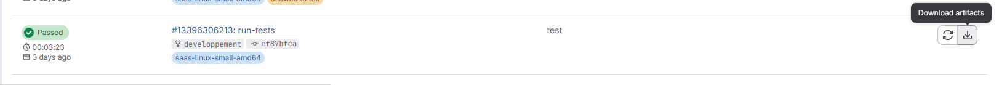
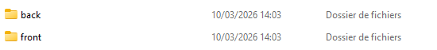
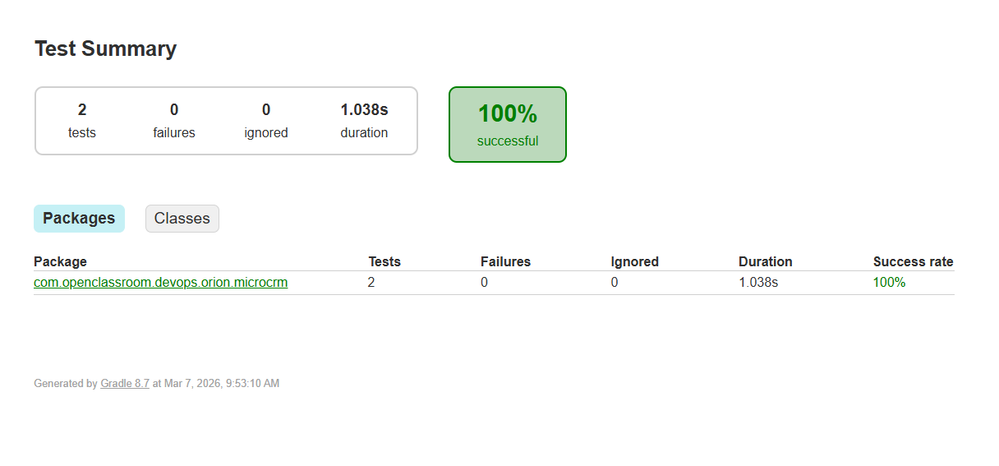

Après l'exécution des tests dans le pipeline d’intégration continue, GitLab enregistre automatiquement les résultats sous forme d’artefacts. Ces artefacts peuvent être consultés directement dans l’interface de GitLab et téléchargés pour analyse ou archivage. Cette fonctionnalité permet aux développeurs et aux équipes DevOps de vérifier les résultats des tests, d’identifier rapidement les problèmes et de garder une trace historique de chaque exécution de pipeline.


